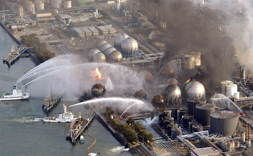
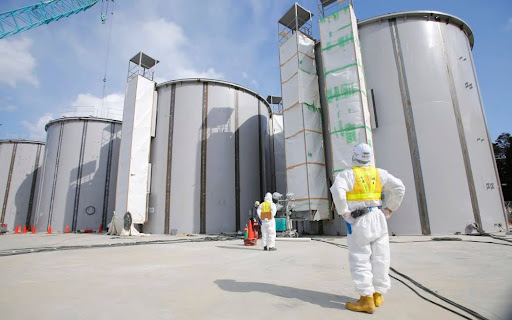
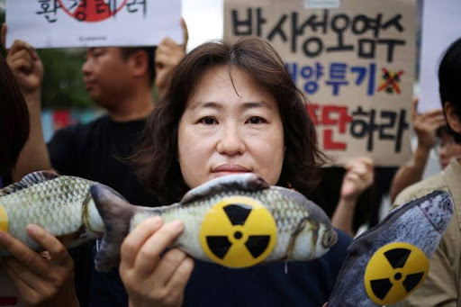

August 25, 2023
Japan has commenced the highly debated process of releasing treated radioactive water from the Fukushima Daiichi nuclear power plant into the Pacific Ocean, sparking global concerns and varying responses from neighboring countries. This move comes over a decade after the 2011 tsunami severely damaged the plant, leading to the accumulation of over a million tonnes of treated waste water.

Since the Fukushima disaster, the plant's operator, Tepco, has stored contaminated water in more than 1,000 tanks, and Japan contends that it needs the land occupied by these tanks for new facilities to safely decommission the plant. The treated waste water, processed through the Advanced Liquid Processing System (ALPS), aims to meet acceptable safety standards by reducing most radioactive substances, excluding tritium and carbon-14. Tritium and carbon-14, radioactive forms of hydrogen and carbon, pose challenges for complete removal and are diluted with seawater before release into the ocean via a 1km underground tunnel.
Currently (as per the test results disclosed by TEPCO), the water registers tritium levels of up to 63 becquerels per litre, well below the World Health Organization's drinking water limit of 10,000 becquerels per litre.
A becquerel serves as a unit to measure radioactivity. TEPCO anticipates that the ongoing release of wastewater, currently exceeding 1.3 million metric tonnes, will span approximately 30 years.

While the International Atomic Energy Agency (IAEA) endorsed Japan's plan, stating it would have a "negligible radiological impact on people and the environment," the domestic response in Japan has been mixed. A survey revealed that only 53% of the Japanese public supports the plan, while 41% oppose it. The UN-appointed human rights experts, environmental activists, and Greenpeace have opposed the plan, raising doubts about the effectiveness of Tepco's treatment process and advocating for continued storage to allow time for the development of better processing technologies. Neighboring Countries' Concerns: China has strongly criticized Japan, accusing it of treating the ocean as its "private sewer," and widened its ban on Japanese seafood imports. South Korea's government officially endorsed the plan, but 80% of its citizens expressed concern, leading to protests and a ban on fish and food products from Fukushima. The Pacific Islands Forum also labeled the plan "another major nuclear contamination disaster."

Protests by environmental activists have erupted in response to the release of wastewater from the Fukushima nuclear plant into the ocean.
Scientists are divided on the safety of the water release. Some argue that tritium levels are low and the release poses minimal risks, comparing it to existing levels in the environment. However, critics, including Greenpeace and certain marine biologists, insist on the need for more studies to assess the potential impacts on the ocean bed, marine life, and humans. The United States National Association of Marine Laboratories expressed skepticism about Japan's data.
The Japanese government and Tepco have launched extensive public education campaigns, promising a high level of transparency. They plan to publish real-time data on water radioactivity levels online and have invited foreign delegations, including media outlets, to tour the processing facilities. However, public skepticism remains, fueled by concerns over the 2011 disaster and fears of potential accidental releases.
As Japan proceeds with the gradual release of treated radioactive water, the global community remains divided on the environmental and human health impacts. While the IAEA supports the plan, opposition from neighboring countries, environmental groups, and segments of the scientific community persists. The long-term consequences of this decision and its broader implications for nuclear waste disposal at sea continue to be subjects of intense debate and scrutiny.